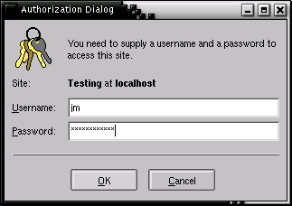

Using webmake.cgi
First of all, after typing the webmake.cgi URL, you'll see a login dialog:

Type your username and password, and (assuming they're right) you'll see
the Choose Site page. Choose the site (ie. the .wmk file) you wish
to edit and click on its Edit link.
The site you've chosen will appear in the Edit Site page:
If you've set up CVS, it's probably good manners to ensure you do a cvs
update immediately before changing anything. If you click on the Update
From CVS link, you'll see the CVS Update page:
Once this is done, click on the return to WebMake file link to return to
the Edit Site page.
Editing Content Items
If you have any items that contain text, such as <content> items, an
Edit button will appear beside them. If you click this, you can edit the
text of that item, and any embedded metadata, in a textbox like so:
This allows you to edit the text of the item, and even upload new text from
your local disk, if you so wish. Hit the Save button to save the changes,
or just hit your browser's Back button to avoid saving.
The Edit Site page doesn't currently allow you to create new tags
in the WebMake file, or change parameters to WebMake tags. To do this,
use the Edit This File As Text link, which will present you with the
entire Webmake XML file in the Edit Page:
Editing Directories
WebMake tags that load content from directories, such as the <contents>
tag, appear with a link beside them reading Browse Source Dir. If you
click this, you'll be presented with the Edit Directory file browser
window:
This allows you to navigate about the directory tree (although you cannot
go above the directory you've named as $FILE_BASE in the
webmake.cgi script), and perform some other operations, such as
editing files in the Edit Page, create new files, and delete files:
Building The Site
If you click the Build Site or Build Fully links on any of the
pages, WebMake will build the site and present you with what was built
(and what went wrong, if anything did!):
Committing Your Changes To CVS
Once you're satisfied with the changes, hit the Commit Changes To CVS
link. This will, firstly, ask you for a message describing your changes:
And, once you've provided that, will send your changes back to the
CVS server.
Note that WebMake tracks any files you've added or deleted using hidden CGI
variables, so once you've done a commit, you're given a choice between
clearing out this list (if the commit was successful), or keeping them (if it
failed in some way).
|